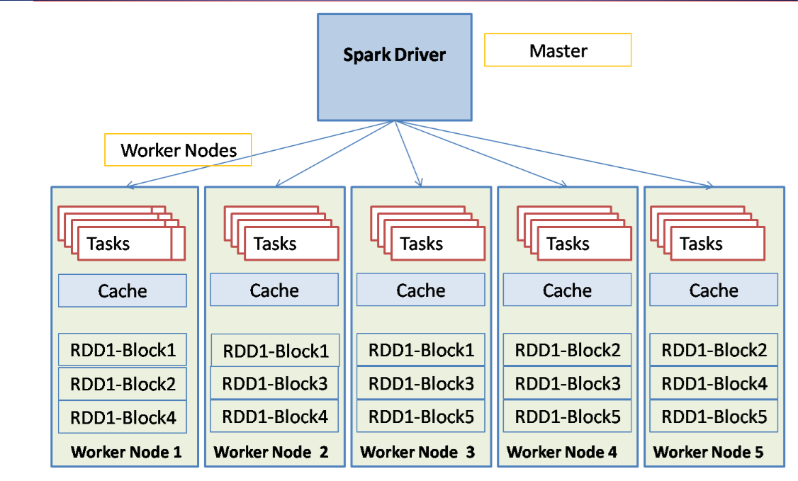
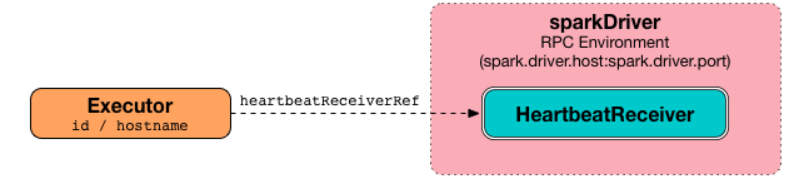

Apache Spark Fault Tolerance
Introduction :
High-level cluster programming paradigms such as MapReduce have been widely adopted to process increasing amounts of data in industry and science. These systems simplify distributed programming by providing locality-aware scheduling, failure tolerance, and load balancing Load allowing a wide range of users to analyze their own large data sets using clusters of commodity devices. Most current cluster computing systems are based on an acyclic data flow model. That is, records are loaded from persistent storage (eg a distributed file system) passed through a DAG made up of specific processes and back to persistent storage. Knowledge of the data flow graph allows automatic scheduling of work and recovery from failures.
Spark Fault Tolerance :
One of the main advantages of Spark is that it provides strong guarantees of failure, as long as the input data is stored reliably, Spark will always calculate the correct result from it despite the failure.
Resilient Distributed Datasets (RDDs) :
Flexible Distributed Data Sets (RDDs) allow programmers to perform in-memory computations in large computer clusters while maintaining failure tolerance. Distributed fail-tolerant is creating restore points from data or logging updates made to them, In our target environment, creating data recovery points is expensive: it requires replicating large data sets across devices across a network of data centers, which typically have much less bandwidth than the memory bandwidth within a device that will also consume additional storage space (replicating data into access memory). RAM reduces the total amount that can be cached while accessing disk slows applications), Coarse-grained transformations are just in the sense that we can log a single operation to be applied to many logs, then remember the series of transformations used to build the RDD (that is, its proportions) and use it to recover the missing fragments. This is what RDD does to efficiently achieve failure tolerance as Provides a restricted form of shared memory based on deterministic coarse-grained transformations rather than fine-grained updates of the shared state. RDDs also rebuild the lost partitions through descent: RDD contains enough information about how it is derived from other RDDs to rebuild only the lost partition, without the need for a restore point. Duplicate data plays an important role in the self-recovery process as we can recover lost data from over duplicate data.

How is failure tolerance achieved through a DAG? As we know that the DAG keeps a record of the operations applied to the RDD i.e. it keeps all the details of the tasks performed on the different sections of the RDD so in case of failure or in case of any RDD missing we can fetch it easily with the help of the DAG diagram, How is failure tolerance achieved through a DAG? As we know that the DAG keeps a record of the operations applied to the RDD meaning that it keeps all the details of the tasks performed on the different sections of the RDD so in case of failure or in case of any RDD missing we can fetch it easily with the help of the DAG diagram, For example, if there is any operation in progress and suddenly there is a loss of RDD data, then with the help of the cluster manager we will identify the partition in which the loss occurred, then through the DAG we will assign the work to a new node which will re-execute the necessary thread to get the missing part.
Check Pointing :
Although the lineage information traced by RDDs always allows the program to recover from failures, this recovery can be time-consuming for RDDs with long lineage chains, for example in tasks that depend on past values it is useful to store the RDDs when Certain time points on permanent storage.
This feature periodically saves data about the application to a trusted storage system such as HDFS or Amazon S3 for use in failover recovery Checkpoints are useful in reducing instances that must be recalculated on failure When data is lost State is recalculated using the graph of conversions, but the checkpoints control how long we must get back in the account.
Spark currently provides an application programming interface (API) for the investigation of a restore point feature, where a check is performed to create restore points automatically, Since the scheduler knows the size of each data set as well as the time it took to process it, it should be able to select an optimal set of RDDs to create restore points on to reduce system recovery time.
Driver Fault Tolerance :
When the launcher fails in batch programs, the implementers will be terminated and the whole Spark application will fail. Not only do RDDs lose their lineage, but the workers also lose their master from whom they receive orders, and all the results of the current calculations completed by the workers will be lost as well, leaving the user with the failure of the launcher with no solution but restart the application from the beginning.
Driver node failures require a special method to create a SparkContext. Instead of creating a new SparkContext, SparkContext.getOrCreate() is called, which takes the directory where the restore points have placed the data. Spark does not automatically restart the launcher if it crashes, so you need to monitor it with a tool like monit and restart it.
Worker Fault Tolerance :
The DAG is generated and executed by the software operator The workers will process a portion of the DAG and they will send the results of the tasks to the software operator which keeps track of the tasks and block information of the running nodes which means that if the workers fail, It can reschedule tasks on other workers, knowing that the results of calculations not sent to the operator will be lost, for tolerance of working node failures Spark duplicates all data on working nodes, thus all RDDs generated through transfers on duplicate income data are tolerated With a working node failing, the RDD line of descent allows the system to recalculate the missing data along the way from the remaining replica of the input data.
Executer Fault Tolerance :
Each port sends a pulse message to the trigger periodically every 10 seconds By default, when a port failure is detected, the trigger tells the task scheduler about the loss of the port which later handles the loss of the tasks executed on the port and also tells the driver the DAG scheduler to remove all traces (such as shuffle blocks) of the missing port, Moreover the trigger also asks SparkContext to replace the missing port with another through its communication with the cluster manager, when the port fails in batch programs the cached data and partially computed RDDs will be lost however Spark RDDs are tolerant of this failure and Spark will start a new port to recompute This data from the original data source will degrade performance when the data is recalculated but failure of the executor will not result in work failure.

Processing Guarantees :
Because of its worker fail-tolerance guarantees, Spark can provide exact semantics for all transformations (once semantics exactly) meaning that even if a worker fails and some data is reprocessed, the transformed end result (meaning the transformed RDDs) will be the same as if the data had been processed Exactly once.
 Syrian team in Raisoni
Syrian team in Raisoni